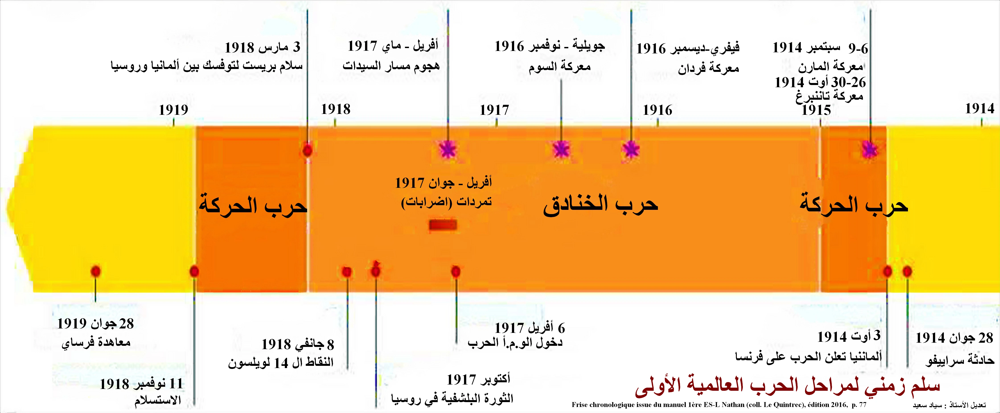
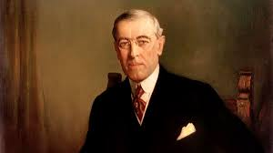

الحرب العالمية الأولى: الأسباب والنتائج
مقدمة
شكلت الحرب العالمية الأولى منعطفًا حاسمًا في تاريخ القرن العشرين، إذ لم تقتصر آثارها على ساحات القتال بل امتدت لتشمل البشر والاقتصاد والسياسة والجغرافيا. فما هي أبرز نتائج هذه الحرب؟
II نتائج الحرب العالمية الأولى
1. النتائج البشرية والاقتصادية
أ. الخسائر البشرية
خلفت الحرب العالمية الأولى خسائر بشرية فادحة غير مسبوقة في تاريخ البشرية، إذ تجاوزت أعداد الضحايا كل الحروب السابقة مجتمعة.
- أفرزت الحرب 9 ملايين قتيل و17 مليون جريح و6 ملايين عاجز.
- تكبدت أوروبا 59% من مجموع القتلى، وتفاوت عدد القتلى بين الدول الأوروبية وتعتبر كل من ألمانيا وروسيا الأكثر تضرراً حيث تراوح عدد القتلى بين 1 و2 مليون.
- كما أفرزت الحرب اختلالات عميقة في البنية الديمغرافية بتراجع نسبة الذكور من السكان النشطين، إلى جانب تراجع نسبة الولادات.
هذه الخسائر أدت إلى نقص حاد في اليد العاملة، وأثرت على التركيبة السكانية لأجيال، مما عمق الأزمات الاجتماعية والاقتصادية في أوروبا بعد الحرب.
ب. الخسائر الاقتصادية وتغير ميزان القوى
لم تقتصر الخسائر على الأرواح، بل شملت البنية الاقتصادية للقارة الأوروبية بأكملها، وأدت إلى تحول جذري في موازين القوى العالمية.
تدمير أوروبا: تدمير البنى الأساسية من طرقات وجسور... وعجز ميزانية الدول الأوروبية التي لجأت إلى التداين من قبل الولايات المتحدة الأمريكية، ولتسديد ديونها تم اعتماد سياسة التضخم المالي مما أدى إلى تراجع قيمة الفرنك الفرنسي بنسبة 75% والجنيه الإسترليني بنسبة 20% والمارك الألماني بنسبة 90%.
استفادة دول جديدة: استفادت دول جديدة من الحرب العالمية الأولى من بينها اليابان والأرجنتين وكندا، وتعتبر الولايات المتحدة الأمريكية الأكثر استفادة حيث تضاعف إنتاجها الصناعي والفلاحي، ومع نهاية الحرب أصبحت تمتلك نصف المخزون العالمي من الذهب فتحول بذلك مركز الثقل المالي العالمي من لندن إلى نيويورك.
هكذا خرجت الولايات المتحدة الأمريكية من الحرب كأكبر قوة اقتصادية في العالم، بينما تراجعت القوى الأوروبية التقليدية، مما مهد لانتقال الزعامة العالمية من أوروبا إلى أمريكا.
2. النتائج السياسية والجيوسياسية
أ. مؤتمر الصلح في باريس وصعوبة تسوية النزاع
بعد انتهاء القتال، اجتمع المنتصرون لرسم ملامح النظام العالمي الجديد، لكن مصالحهم المتضاربة جعلت التسوية صعبة ومعقدة.
انعقد مؤتمر الصلح في باريس بقصر فرساي يوم 18 جانفي 1919 واستمرت مداولاته إلى 1920. هيمن عليه الأربعة الكبار من الدول المنتصرة (إنجلترا - فرنسا - إيطاليا - الولايات المتحدة الأمريكية) بينما تم إقصاء الدول المنهزمة وروسيا.
اختلفت مواقف الدول الكبار بسبب تضارب مصالحها:
- الموقف الأمريكي: مثله الرئيس الأمريكي ولسن الذي تقدم ببرنامج يتضمن 14 نقطة ويهدف إلى إرساء السلم في العالم، من أبرز نقاطه الحد من الدبلوماسية السرية والحد من التسلح وحق الشعوب في تقرير مصيرها وتكوين جمعية الأمم.
- الموقف الفرنسي: تمثل في إضعاف ألمانيا وتحميلها مسؤولية اندلاع الحرب وإجبارها على دفع التعويضات.
- الموقف الإنجليزي: كان ضد إضعاف ألمانيا خوفاً من الهيمنة الفرنسية على القارة الأوروبية.
- الموقف الإيطالي: طالبت إيطاليا بتحقيق الوعود الترابية التي تلقتها من الوفاق الثلاثي مقابل تضحياتها أثناء الحرب.
هذا التضارب في المواقف جعل مؤتمر الصلح مسرحاً للصراع الدبلوماسي، وأثّر بشكل مباشر على طبيعة المعاهدات التي أُبرمت لاحقاً.
ب. جمعية الأمم ومعاهدات السلم
من أبرز نتائج مؤتمر الصلح إنشاء جمعية الأمم، التي مثلت أول محاولة جادة لتنظيم العلاقات الدولية على أساس جماعي.
تأسست جمعية الأمم تطبيقاً للمادة 14 من برنامج الرئيس الأمريكي ولسن، وهي تهدف إلى الحد من التسلح وإرساء السلم في العالم، ولكنها تحولت إلى "نادٍ للمنتصرين" بإقصائها الدول المنهزمة، كما أنها افتقرت إلى وسائل الردع العسكرية ولم تنخرط فيها الولايات المتحدة الأمريكية بسبب رفض الكونغرس الأمريكي، ومن ناحية أخرى خيبت جمعية الأمم آمال الشعوب المستعمرة بسبب مصادقتها على الانتداب الفرنسي والإنجليزي في المشرق العربي والمستعمرات الألمانية.
إلى جانب الجمعية، فرضت على الدول المنهزمة معاهدات سلم قاسية أدت إلى تفكيكها والحد من قوتها العسكرية والتخلي عن جزء من أراضيها:
- معاهدة فرساي: فرضت على ألمانيا في 28 جوان 1919 وتضمنت شروطاً قاسية اعتبرها الألمان سلماً مملاة، وأدت إلى خسارة جزء كبير من أراضيها والتخلي عن مستعمراتها والحد من قوتها العسكرية، كما أجبرت على دفع تعويضات مالية بقيمة 132 مليار مارك.
- معاهدة سان جرمان: فرضت على النمسا في سبتمبر 1919.
- معاهدة تريانون: فرضت على المجر في جوان 1920.
- معاهدة نويي: فرضت على بلغاريا في نوفمبر 1919.
- معاهدة سيفر: فرضت على الإمبراطورية العثمانية في أوت 1920 وأدت إلى تفكيكها، وعلى إثر المقاومة التركية بقيادة مصطفى كمال تم تعويضها بمعاهدة لوزان 1923.
هذه المعاهدات، رغم قسوتها، فشلت في تحقيق سلام دائم، بل زرعت بذور النزاعات المستقبلية، خاصة في ألمانيا التي شعرت بالإذلال.
ج. الخريطة الجيوسياسية الجديدة
أدت الحرب والمعاهدات إلى إعادة رسم خريطة أوروبا والشرق الأوسط بشكل جذري، حيث انهارت إمبراطوريات قديمة وظهرت دول جديدة.
- انهيار الإمبراطوريات القديمة وزوالها: الإمبراطورية الروسية والنمساوية المجرية والعثمانية.
-
ظهور دول جديدة، مثل:
- بولونيا التي ظهرت على حساب ألمانيا وروسيا.
- تشيكوسلوفاكيا التي تكونت على حساب النمسا وألمانيا.
- يوغوسلافيا التي جمعت بين صربيا وكرواتيا وسلوفينيا والجبل الأسود والبوسنة والهرسك.
- دول البلطيق الثلاثة: ليتونيا ولتوانيا وإستونيا التي استقلت عن روسيا البلشفية.
هذه التغيرات الجيوسياسية لم تكن مجرد تعديل حدود، بل أعادت تشكيل الهوية السياسية للقارة الأوروبية وأثرت على العلاقات الدولية لعقود قادمة.
خاتمة
أسفرت الحرب العالمية الأولى عن تغييرات جيوسياسية عميقة ساهمت في زرع بذور خلافات جديدة مهدت لاندلاع الحرب العالمية الثانية.
📖 تعريفات
👤 شخصيات
- ولسن (وودرو ويلسون): رئيس الولايات المتحدة الأمريكية (1913–1921). تقدم في جانفي 1918 ببرنامج «النقاط الأربعة عشر» الذي دعا إلى الدبلوماسية المفتوحة، والحد من التسلح، وحق الشعوب في تقرير مصيرها، وإنشاء جمعية الأمم لضمان السلام. شارك في مؤتمر الصلح بباريس وحاول فرض رؤيته، لكنه فشل في إقناع الكونغرس الأمريكي بالانضمام إلى عصبة الأمم، مما أضعف المنظمة الجديدة.
- مصطفى كمال (أتاتورك): قائد عسكري تركي وقائد المقاومة الوطنية ضد تقسيم الدولة العثمانية بعد الحرب العالمية الأولى. رفض معاهدة سيفر عام 1920 وقاد حرب الاستقلال التركية التي انتهت بإلغاء السلطنة، وتوقيع معاهدة لوزان 1923 التي اعترفت بتركيا الحديثة. أصبح أول رئيس للجمهورية التركية وأجرى إصلاحات علمانية شاملة غيرت بنية الدولة والمجتمع.
⚔️ أحداث هامة
- مؤتمر الصلح في باريس (1919): انعقد في جانفي 1919 بقصر فرساي بحضور ممثلي الدول المنتصرة وعلى رأسهم «الأربعة الكبار» (فرنسا، إنجلترا، إيطاليا، الولايات المتحدة) بينما أُقصيت الدول المنهزمة وروسيا البلشفية. أسفر عن سلسلة من معاهدات السلام التي أعادت رسم خريطة أوروبا والشرق الأوسط، وقررت إنشاء عصبة الأمم، لكن إملاء شروط قاسية على المنهزمين زرع بذور الحرب العالمية الثانية.
📜 معاهدات
- معاهدة فرساي (1919): وُقعت في 28 جوان 1919، وفرضت على ألمانيا شروطاً قاسية: الاعتراف بمسؤوليتها عن الحرب (المادة 231)، دفع تعويضات مالية ضخمة (132 مليار مارك ذهبي)، فقدان الألزاس واللوران لصالح فرنسا وممر دانزيغ لصالح بولونيا، وتجريد جيشها من السلاح الثقيل مع تقليص عدده إلى 100 ألف جندي. اعتبرها الألمان «سلاماً مُذِلاً» وكانت أحد أسباب صعود النازية لاحقاً.
- معاهدة سان جرمان (1919): وُقعت في سبتمبر 1919 مع النمسا، وقضت بتفكيك ما تبقى من الإمبراطورية النمساوية المجرية، واعترفت بدول جديدة مثل تشيكوسلوفاكيا وبولونيا ويوغوسلافيا، وحظرت اتحاد النمسا بألمانيا (الأنشلوس)، وفرضت قيوداً عسكرية وتعويضات على النمسا.
- معاهدة تريانون (1920): وُقعت مع المجر في جوان 1920، فقدت بموجبها المجر حوالي ثلثي أراضيها السابقة لمصلحة رومانيا وتشيكوسلوفاكيا ويوغوسلافيا، مما ترك أقلية مجرية كبيرة خارج حدودها وأثار شعوراً عميقاً بالظلم في الأوساط القومية المجرية.
- معاهدة نويي (1919): عقدت في نوفمبر 1919 مع بلغاريا، ألزمتها بالتنازل عن أراضٍ لليونان ويوغوسلافيا، وفرضت عليها قيوداً عسكرية صارمة إلى جانب دفع تعويضات مالية، مما جعلها من أكثر الدول تضرراً في البلقان بعد الحرب.
- معاهدة سيفر (1920): فُرضت على الدولة العثمانية في أوت 1920، وقضت بتجريدها من أراضيها غير التركية: وضع مناطق عربية تحت الانتداب، ومنحت اليونان إدارة إزمير، وفتحت مضيقي البوسفور والدردنيل للملاحة الدولية، ووعدت بإنشاء دولة أرمينية وكيان كردي. رفضها مصطفى كمال وقاد حرب الاستقلال التي أسقطتها.
- معاهدة لوزان (1923): حلت محل معاهدة سيفر في جويلية 1923 بعد انتصار الأتراك في حرب الاستقلال. اعترفت بحدود تركيا الحديثة، وألغت الامتيازات الأجنبية، وضمنت السيادة التركية على إزمير وتراقيا الشرقية، وأبقت على نظام المضايق مقيداً، وشكلت الأساس القانوني للجمهورية التركية الوليدة.
📌 أخرى
- جمعية الأمم: منظمة دولية أنشئت بموجب معاهدة فرساي عام 1920 ومقرها جنيف، استناداً إلى المبدأ الرابع عشر من برنامج ولسن. هدفها المعلن هو ضمان الأمن الجماعي والحد من التسلح وتسوية النزاعات سلمياً. لكنها افتقرت إلى جيش دائم، وتطلبت قراراتها الإجماع، ولم تنضم إليها الولايات المتحدة، فتحولت فعلياً إلى أداة بيد الدول المنتصرة وعجزت عن منع العدوانيات التي أدت لاحقاً إلى الحرب العالمية الثانية.
- الانتداب: نظام وصاية استعماري أقره ميثاق عصبة الأمم (المادة 22) لإدارة الأراضي المنتزعة من الدول المنهزمة (المستعمرات الألمانية والأقاليم العثمانية غير التركية). صُنفت الانتدابات إلى فئات (أ، ب، ج) بحسب درجة «نضجها السياسي». في المشرق العربي، وضعت سوريا ولبنان تحت الانتداب الفرنسي، وفلسطين والعراق تحت الانتداب البريطاني. رُفع شعار «مساعدة الشعوب على بلوغ الاستقلال»، لكن الانتداب طُبق كاستعمار مقنع.
📅 سنوات وفترات
- 1919: انعقاد مؤتمر الصلح في باريس وتوقيع معاهدات فرساي وسان جرمان ونويي.
- 1920: توقيع معاهدتي تريانون وسيفر وإنشاء جمعية الأمم.
- 1923: توقيع معاهدة لوزان التي اعترفت بتركيا الحديثة.
🗺️ خرائط ومعطيات مصورة

